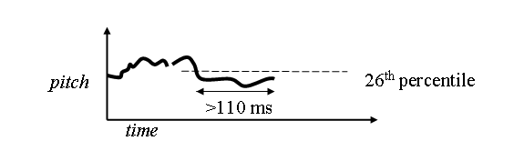

When Should One Backchannel?

Explore the inner linguistic features.

What is backchannel?
A backchannel refers to a secondary, informal communication channel that runs parallel to the primary communication. It can occur in various contexts, including:- Conversations or Meetings: Participants may use backchannels (like texting or messaging apps) to share thoughts, ask questions, or provide feedback without interrupting the main speaker.
- Education: In classrooms, students might use backchannels to discuss topics or ask questions while a teacher is presenting, often facilitated by tools like chat rooms or social media platforms.
- Technology: In computing, backchannel communication can refer to methods that allow data or messages to be sent alongside the main transmission, often used in networking or secure communications to enhance privacy or security.
- Social Media: Users may engage in backchannel conversations during live events, such as conferences or sports games, to comment or share insights without affecting the main broadcast.